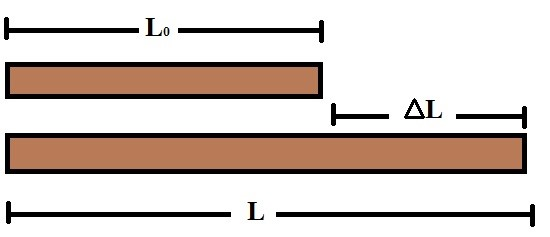
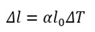
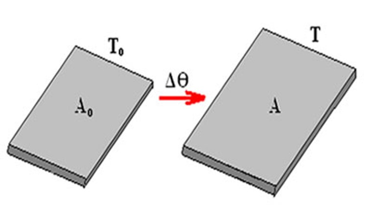
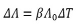
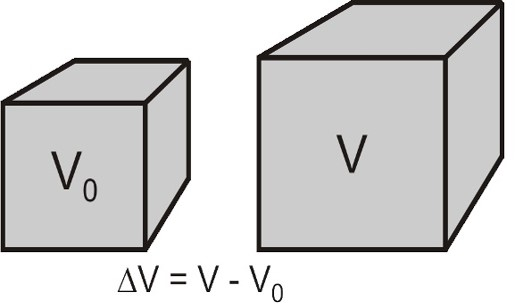
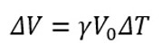
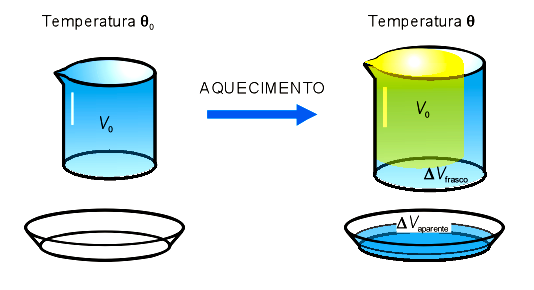
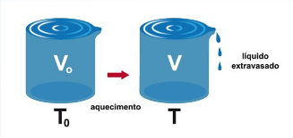

Dilatometria
Introdução
A dilatometria é a área da Física que estuda a dilatação térmica dos corpos de maneira geral (sólidos, líquidos e gasosos). A dilatação térmica de um corpo ocorre por meio do aumento de temperatura, fazendo com que o objeto/substância aumente suas dimensões, e/ou por meio da diminuição da temperatura, fazendo com que as dimensões do item analisado diminuam.
Dilatação dos sólidos
Dilatação linear
Consiste na variação do comprimento do sólido, ou seja, existe uma análise de uma única dimensão do corpo. Aplicada em situações de dilatação de cabos e barras, por exemplo.
Esse tipo de dilatação é calculado pela seguinte equação:
Onde:
Δl = Valor da variação do comprimento.
α = Coeficiente de dilatação linear do material.
l0 = Comprimento inicial.
ΔT = valor da variação de temperatura.
Videoaulas
Dilatação Linear
Exercícios resolvidos
Dilatação superficial
Consiste na variação do comprimento e da altura do objeto, ou seja, há uma análise de duas dimensões do corpo. Aplicada em situações de dilatação de placas e chapas, por exemplo.
Esse tipo de dilatação é calculado pela seguinte equação:
Onde:
ΔA = Valor da variação na área do item.
β = Coeficiente de dilatação superficial do objeto.
A0 = Área inicial.
ΔT = Valor da variação de temperatura.
Videoaula
Dilatação superficial
Dilatação volumétrica
Consiste na variação do comprimento, altura e largura do item, ou seja, há uma análise de três dimensões do corpo. Aplicada em múltiplas situações onde os corpos sólidos são tridimensionais e as três dimensões podem variar.
Esse tipo de dilatação é calculado pela seguinte equação:
Onde:
ΔV = valor da variação do volume.
γ = coeficiente de dilatação volumétrica do material.
V0 = Volume inicial.
ΔT = Valor da variação de temperatura.
Videoaula
Dilatação volumétrica
Dilatação dos líquidos
Dilatação aparente
A dilatação aparente ocorre, por exemplo, quando um líquido está armazenado em um recipiente que pode ser dilatado, o que faz com que tanto a água como o próprio recipiente, após sofrerem aumento/diminuição de temperatura, sejam afetados pela dilatação, dando uma falsa ideia da variação de dimensão do líquido.
Dilatação real
A dilatação real é o valor real da variação de volume sofrida somente pelo líquido e não pelo recipiente que o armazena, logo, para realizar o cálculo da dilatação real é necessário pegar o valor da dilatação aparente do líquido observada em um experimento com, por exemplo, tubo de vidro graduado e água inserida no interior, e depois subtrair o valor da variação do volume que o recipiente sofreu.
Videoaula
Dilatação dos líquidos
Diltação dos gases
A dilatação térmica dos gases segue o mesmo princípio da dilatação dos sólidos e dos líquidos, pois, quando se aumenta a temperatura do gás, ele expande e quando a temperatura diminui, ele diminui seu volume.
O coeficiente de dilatação volumétrica dos gases é igual para qualquer tipo de gás, o que não ocorre nos corpos em outros estados da matéria (líquido e sólido). Isso ocorre, de acordo com a teoria cinético-molecular, por não haver interação entre as moléculas de um gás.